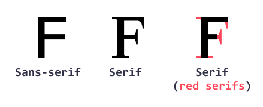
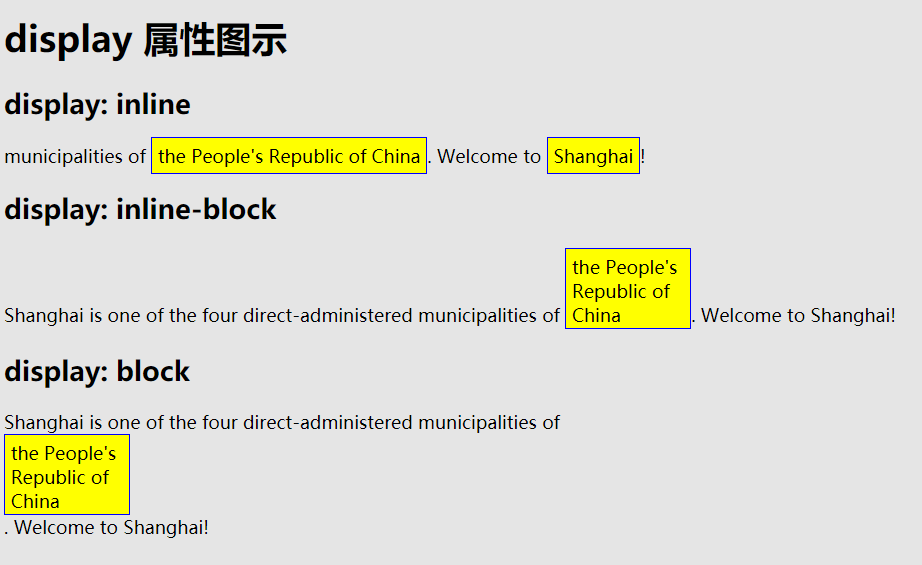

CSS 指的是层叠样式表/也称级联样式表 (Cascading Style Sheets)
CSS 描述了如何在屏幕、纸张或其他媒体上显示 HTML 元素
外部样式表存储在 CSS 文件中
CSS 规则集（rule-set）由选择器和声明块组成：
CSS 选择器用于“查找”（或选取）要设置样式的 HTML 元素。
可以将 CSS 选择器分为五类：
简单选择器（根据名称、id、类来选取元素）
组合器选择器（根据它们之间的特定关系来选取元素）
伪类选择器（根据特定状态选取元素）
伪元素选择器（选取元素的一部分并设置其样式）
属性选择器（根据属性或属性值来选取元素）
| 选择器 | 例子 | 例子描述 |
|---|---|---|
| .class | .intro |
选取所有 class="intro" 的元素。 div.classname {} 选取所有具有 class="classname" 属性的 div 元素 HTML 元素也可以引用多个类。<p class="center large">这个段落引用两个类。</p> |
| #id | #firstname |
选取 id="firstname" 的那个元素。 元素的 id 在页面中是唯一的，因此 id 选择器用于选择一个唯一的元素！ |
| * | * | 选取所有元素。 |
| element | p | 选取所有 <p> 元素。 |
| element,element,.. | div, p | 选取所有 <div> 元素和所有 <p> 元素。 |
当浏览器读到样式表时，它将根据样式表中的信息来格式化 HTML 文档。
有三种插入样式表的方法：
外部 CSS
外部样式表可以在任何文本编辑器中编写，并且必须以 .css 扩展名保存。
外部 .css 文件不应包含任何 HTML 标签。
<link rel="stylesheet" type="text/css" href="mystyle.css">
内部 CSS
内部样式是在 head 部分的 <style> 元素中进行定义。
行内 CSS
行内样式（也称内联样式）可用于为单个元素应用唯一的样式。
行内样式在相关元素的 "style" 属性中定义：
多个样式表
如果在不同样式表中为同一选择器（元素）定义了一些属性，则将使用最后读取的样式表中的值。
页面中的所有样式将按照以下规则“层叠”为新的“虚拟”样式表，其中第一优先级最高：
1.行内样式（在 HTML 元素中）
2.外部和内部样式表（在 head 部分）, 区分定义先后顺序
3.浏览器默认样式
因此，行内样式具有最高优先级，并且将覆盖外部和内部样式以及浏览器默认样式。
位于 <style> 元素内的 CSS 注释，以 /* 开始，以 */ 结束：
p {
color: red; /* 把文本设置为红色 */
}
RGB 值
rgb(red, green, blue) / rgba(red, green, blue, alpha)
rgba(238, 130, 238, 0.5)
HEX 值
#rrggbb
HSL 颜色
在 CSS 中，可以使用色相、饱和度和明度（HSL）来指定颜色，格式如下：
hsl(hue, saturation, lightness) / hsla(hue, saturation, lightness, alpha)
hsl(0, 0%, 47%) hsla(9, 100%, 64%, 0.2)
可以为任何 HTML 元素设置背景颜色
不透明度 / 透明度
opacity 属性指定元素的不透明度/透明度。取值范围为 0.0 - 1.0。值越低，越透明
div {
background-color: green;
opacity: 0.3;
}
注意：使用 opacity 属性为元素的背景添加透明度时，其所有子元素都继承相同的透明度。
使用 RGBA 的透明度
如果不希望对子元素应用不透明度，请使用 RGBA 颜色值
默认情况下，图像会重复，以覆盖整个元素。
body {
background-image: url("paper.gif");
}
默认情况下，background-image 属性在水平和垂直方向上都重复图像。
repeat 默认。背景图像将在垂直方向和水平方向重复。
repeat-x 只在水平方向上重复
repeat-y 只在垂直方向上重复
no-repeat 不重复
inherit 规定应该从父元素继承 background-repeat 属性的设置。
background-position 指定背景图片位置
body {
background-image: url("tree.png");
background-repeat: no-repeat;
background-position: right top;
}
| 值 | 描述 |
|---|---|
|
如果您仅规定了一个关键词，那么第二个值将是"center"。 默认值：0% 0%。 |
| x% y% |
第一个值是水平位置，第二个值是垂直位置。 左上角是 0% 0%。右下角是 100% 100%。 如果您仅规定了一个值，另一个值将是 50%。 |
| xpos ypos |
第一个值是水平位置，第二个值是垂直位置。 左上角是 0 0。单位是像素 (0px 0px) 或任何其他的 CSS 单位。 如果您仅规定了一个值，另一个值将是50%。 您可以混合使用 % 和 position 值。 |
指定背景图像是应该滚动还是固定的
background-attachment: fixed|scroll|inherit;
| 值 | 描述 |
|---|---|
| scroll | 默认值。背景图像会随着页面其余部分的滚动而移动。 |
| fixed | 当页面的其余部分滚动时，背景图像不会移动。 |
| inherit | 规定应该从父元素继承 background-attachment 属性的设置。 |
规定背景的绘制区域
background-clip: border-box|padding-box|content-box;
| 值 | 描述 | 测试 |
|---|---|---|
| border-box | 背景被裁剪到边框盒。 | 测试 |
| padding-box | 背景被裁剪到内边距框。 | 测试 |
| content-box | 背景被裁剪到内容框。 | 测试 |
相对于内容框来定位背景图像
| 值 | 描述 | 测试 |
|---|---|---|
| padding-box | 背景图像相对于内边距框来定位。 | 测试 |
| border-box | 背景图像相对于边框盒来定位。 | 测试 |
| content-box | 背景图像相对于内容框来定位。 | 测试 |
规定背景图像的尺寸：
background-size:80px 60px;
如需缩短代码，也可以在一个属性中指定所有背景属性。它被称为简写属性。
body {
background-color: #ffffff;
background-image: url("tree.png");
background-repeat: no-repeat;
background-position: right top;
}
可以写成:
body {
background: #ffffff url("tree.png") no-repeat right top;
}
点状边框。border-style: dotted;
虚线边框。border-style: dashed;
实线边框。border-style: solid;
双线边框。border-style: double;
凹槽边框。其效果取决于 border-color 的值。border-style: groove;
垄状边框。其效果取决于 border-color 的值。border-style: ridge;
3D inset 边框。其效果取决于 border-color 的值。border-style: inset;
3D outset 边框。其效果取决于 border-color 的值。border-style: outset;
无边框。border-style: none;
混合边框。border-style: dotted dashed solid double; (上右下左顺序)
注意：除非设置了 border-style 属性，否则其他 CSS 边框属性（将在下一章中详细讲解）都不会有任何作用！
也可以单独设置四个边框样式
p {
border-top-style: dotted;
border-right-style: solid;
border-bottom-style: dotted;
border-left-style: solid;
}
还可以合在一起写
p { border-style: dotted solid; }
如果 border-style 属性设置四个值：上右下左
如果 border-style 属性设置三个值：上 右左 下
如果 border-style 属性设置两个值：上下 右左
如果 border-style 属性设置一个值：四个边框一样
border-width 属性指定四个边框的宽度
以将宽度设置为特定大小（以 px、pt、cm、em 计），也可以使用以下三个预定义值之一：thin、medium 或 thick
border-width: 25px 10px 4px 35px; /* 上边框 25px，右边框 10px，下边框 4px，左边框 35px */
如果未设置 border-color，则它将继承元素的颜色。
border-color 属性可以设置一到四个值（用于上边框、右边框、下边框和左边框）
border-color: red green blue yellow; /* 上红、右绿、下蓝、左黄 */
border-radius: 5px;
border 属性是以下各个边框属性的简写属性：
border-width
border-style（必需）
border-color
| 属性 | 描述 |
|---|---|
| border | 简写属性，在一条声明中设置所有边框属性。 |
| border-color | 简写属性，设置四条边框的颜色。 |
| border-radius | 简写属性，可设置圆角的所有四个 border-*-radius 属性。 |
| border-style | 简写属性，设置四条边框的样式。 |
| border-width | 简写属性，设置四条边框的宽度。 |
| border-bottom | 简写属性，在一条声明中设置所有下边框属性。 |
| border-bottom-color | 设置下边框的颜色。 |
| border-bottom-style | 设置下边框的样式。 |
| border-bottom-width | 设置下边框的宽度。 |
| border-left | 简写属性，在一条声明中设置所有左边框属性。 |
| border-left-color | 设置左边框的颜色。 |
| border-left-style | 设置左边框的样式。 |
| border-left-width | 设置左边框的宽度。 |
| border-right | 简写属性，在一条声明中设置所有右边框属性。 |
| border-right-color | 设置右边框的颜色。 |
| border-right-style | 设置右边框的样式。 |
| border-right-width | 设置右边框的宽度。 |
| border-top | 简写属性，在一条声明中设置所有上边框属性。 |
| border-top-color | 设置上边框的颜色。 |
| border-top-style | 设置上边框的样式。 |
| border-top-width | 设置上边框的宽度。 |
可以使用的值:
auto - 浏览器来计算外边距
length - 以 px、pt、cm 等单位指定外边距
% - 指定以包含元素宽度的百分比计的外边距
inherit - 指定应从父元素继承外边距
如果 margin 属性设置四个值：上右下左
如果 margin 属性设置三个值：上 右左 下
如果 margin 属性设置两个值：上下 右左
如果 margin 属性设置一个值：四个边框一样
提示：允许负值
也可以分开设置
margin-top
margin-right
margin-bottom
margin-left
CSS 外边距合并
外边距合并指的是，当两个垂直外边距相遇时，它们将形成一个外边距。
合并后的外边距的高度等于两个发生合并的外边距的高度中的较大者。
w3school
可以使用的值:
length - 以 px、pt、cm 等单位指定外边距
% - 指定以包含元素宽度的百分比计的外边距
inherit - 指定应从父元素继承外边距
如果 padding 属性设置四个值：上右下左
如果 padding 属性设置三个值：上 右左 下
如果 padding 属性设置两个值：上下 右左
如果 padding 属性设置一个值：四个边框一样
提示：不允许负值
也可以分开设置
padding-top
padding-right
padding-bottom
padding-left
height 和 width 属性不包括内边距、边框或外边距。它设置的是元素内边距、边框以及外边距内的区域的高度或宽度。
height 和 width 属性可设置如下值：
auto - 默认。浏览器计算高度和宽度。
length - 以 px、cm 等定义高度/宽度。
% - 以包含块的百分比定义高度/宽度。
initial - 将高度/宽度设置为默认值。
inherit - 从其父值继承高度/宽度。
min-width/max-width 属性用于设置元素的最小/大宽度。
所有 HTML 元素都可以视为方框。在 CSS 中，在谈论设计和布局时，会使用术语“盒模型”或“框模型”。

轮廓是在元素周围绘制的一条线，在边框之外，以凸显元素。
轮廓与边框不同！不同之处在于：轮廓是在元素边框之外绘制的，并且可能与其他内容重叠。同样，轮廓也不是元素尺寸的一部分；元素的总宽度和高度不受轮廓线宽度的影响。
CSS 拥有如下轮廓属性：
outline-style
outline-color
outline-width
outline-offset
outline 轮廓简写 ,组成:
outline-width
outline-style（必需）
outline-color
| 属性 | 描述 |
|---|---|
| color | 设置文本颜色。 |
| direction | 指定文本的方向 / 书写方向。 |
| letter-spacing | 设置字符间距。 |
| line-height | 设置行高。 |
| text-align | 指定文本的水平对齐方式。 |
| text-decoration |
指定添加到文本的装饰效果。
|
| text-indent | 指定文本块中首行的缩进。 |
| text-shadow | 指定添加到文本的阴影效果。text-shadow: 2px 2px 5px red; 水平垂直阴影2px 阴影模糊效果5px 阴影颜色 red |
| text-transform | 控制文本的大小写。全部大写|全部小写|单词首字母大写(uppercase|lowercase|capitalize) |
| text-overflow | 指定应如何向用户示意未显示的溢出内容。 |
| unicode-bidi | 与 direction 属性一起使用，设置或返回是否应重写文本来支持同一文档中的多种语言。 |
| vertical-align | 指定文本的垂直对齐方式。 |
| white-space | 指定如何处理元素内的空白。 |
| word-spacing | 设置单词间距。 |
在 CSS 中，有五个通用字体族：
衬线字体（Serif）- 在每个字母的边缘都有一个小的笔触。它们营造出一种形式感和优雅感。
无衬线字体（Sans-serif）- 字体线条简洁（没有小笔画）。它们营造出现代而简约的外观。
等宽字体（Monospace）- 这里所有字母都有相同的固定宽度。它们创造出机械式的外观。
草书字体（Cursive）- 模仿了人类的笔迹。
幻想字体（Fantasy）- 是装饰性/俏皮的字体。
所有不同的字体名称都属于这五个通用字体系列之一。

font-family 规定文本的字体
font-family 属性应包含多个字体名称作为“后备”系统，以确保浏览器/操作系统之间的最大兼容性。请以您需要的字体开始，
并以通用系列结束（如果没有其他可用字体，则让浏览器选择通用系列中的相似字体）。字体名称应以逗号分隔。
注释：如果字体名称不止一个单词，则必须用引号引起来，例如："Times New Roman"
font-family: "Times New Roman", Times, serif;
font-style 主要用于指定斜体文本
此属性可设置三个值：
normal - 文字正常显示
italic - 文本以斜体显示
oblique - 文本为“倾斜”（倾斜与斜体非常相似，但支持较少）
font-weight 指定字体的粗细 normal|bold
font-size 设置文本的大小
font-size 值可以是绝对或相对大小。
绝对尺寸：
将文本设置为指定大小
不允许用户在所有浏览器中更改文本大小（可访问性不佳）
当输出的物理尺寸已知时，绝对尺寸很有用
相对尺寸：
设置相对于周围元素的大小
允许用户在浏览器中更改文本大小
注释：如果您没有指定字体大小，则普通文本（如段落）的默认大小为 16px（16px = 1em）。
W3C 建议使用 em 尺寸单位
1em 等于当前字体大小。浏览器中的默认文本大小为 16px。因此，默认大小 1em 为 16px。
可以使用这个公式从像素到 em 来计算大小：pixels/16=em。
响应式字体大小
可以使用 vw 单位设置文本大小，它的意思是“视口宽度”（"viewport width"）。
这样，文本大小将遵循浏览器窗口的大小，请调整浏览器窗口的大小，以查看字体大小如何缩放：
视口（Viewport）是浏览器窗口的大小。 1vw = 视口宽度的 1％。如果视口为 50 厘米宽，则 1vw 为 0.5 厘米。
| 属性 | 描述 |
|---|---|
| font | 简写属性。在一条声明中设置所有字体属性。 |
| font-family | 规定文本的字体系列（字体族）。 |
| font-size | 规定文本的字体大小。 |
| font-style | 规定文本的字体样式。 |
| font-variant | 规定是否以小型大写字母的字体显示文本。 |
| font-weight | 规定字体的粗细。 |
| 属性 | 描述 |
|---|---|
| border | 简写属性。在一条声明中设置所有边框属性。 |
| border-collapse |
设置是否将表格边框折叠为单一边框
表格拥有双边框。这是因为 table 和 <th> 和 <td> 元素都有单独的边框。 |
| border-spacing | 规定相邻单元格之间的边框的距离。 |
| caption-side | 规定表格标题的位置。 |
| empty-cells | 规定是否在表格中的空白单元格上显示边框和背景。 |
| table-layout | 设置用于表格的布局算法。 |
可悬停表格
在 <tr> 元素上使用 :hover 选择器，以突出显示鼠标悬停时的表格行：
tr:hover {background-color: #f5f5f5;}
条状表格(相邻行颜色不一样)
为了实现斑马纹表格效果，请使用 nth-child() 选择器，并为所有偶数（或奇数）表行添加 background-color：
tr:nth-child(even) {background-color: #f2f2f2;}
odd: 奇数 even: 偶数
display 属性规定是否/如何显示元素
每个 HTML 元素都有一个默认的 display 值，具体取决于它的元素类型。大多数元素的默认 display 值为 block 或 inline
将行内元素更改为块元素，反之亦然，对于使页面以特定方式显示同时仍遵循 Web 标准很有用。
一个常见的例子是为实现水平菜单而生成行内的 <li> 元素：
注意：设置元素的 display 属性仅会更改元素的显示方式，而不会更改元素的种类。因此，带有 display: block; 的行内元素不允许在其中包含其他块元素。
display: none; 隐藏元素,相当于 Android 中的 GONE
visibility
| 值 | 描述 |
|---|---|
| visible | 默认值。元素是可见的。 |
| hidden | 元素是不可见的。相当于 Android 中的 INVISIBLE |
| collapse | 当在表格元素中使用时，此值可删除一行或一列，但是它不会影响表格的布局。被行或列占据的空间会留给其他内容使用。如果此值被用在其他的元素上，会呈现为 "hidden"。 |
| inherit | 规定应该从父元素继承 visibility 属性的值。 |
position 属性规定应用于元素的定位方法的类型。
有五个不同的位置值：static, relative, fixed, absolute, sticky
元素其实是使用 top、bottom、left 和 right 属性定位的。但是，除非首先设置了 position 属性，否则这些属性将不起作用。根据不同的 position 值，它们的工作方式也不同。
HTML 元素默认情况下的定位方式为 static（静态）。
态定位的元素不受 top、bottom、left 和 right 属性的影响。始终根据页面的正常流进行定位：
相对于其正常位置进行定位。
设置相对定位的元素的 top、right、bottom 和 left 属性将导致其偏离其正常位置进行调整。不会对其余内容进行调整来适应元素留下的任何空间。
相对于视口定位，这意味着即使滚动页面，它也始终位于同一位置。 top、right、bottom 和 left 属性用于定位此元素。
固定定位的元素不会在页面中通常应放置的位置上留出空隙。
相对于最近的定位祖先元素进行定位（而不是相对于视口定位，如 fixed）。
如果绝对定位的元素没有祖先，它将使用文档主体（body），并随页面滚动一起移动。
注意：“被定位的”元素是其位置除 static 以外的任何元素。
根据用户的滚动位置进行定位。
粘性元素根据滚动位置在相对（relative）和固定（fixed）之间切换。起先它会被相对定位，直到在视口中遇到给定的偏移位置为止 - 然后将其“粘贴”在适当的位置（比如 position:fixed）。
必须至少指定 top、right、bottom 或 left 之一，以便粘性定位起作用。
div.sticky {
position: -webkit-sticky; /* Safari */
position: sticky;
top: 0;
background-color: green;
border: 2px solid #4CAF50;
}
在对元素进行定位时，它们可以与其他元素重叠。
z-index 属性指定元素的堆栈顺序（哪个元素应放置在其他元素的前面或后面）。
元素可以设置正或负的堆叠顺序：
img {
position: absolute;
left: 0px;
top: 0px;
z-index: -1;
}
overflow 属性指定在元素的内容太大而无法放入指定区域时是剪裁内容还是添加滚动条。
overflow 属性可设置以下值：
visible - 默认。溢出没有被剪裁。内容在元素框外渲染
hidden - 溢出被剪裁，其余内容将不可见
scroll - 溢出被剪裁，同时添加滚动条以查看其余内容
auto - 与 scroll 类似，但仅在必要时添加滚动条
注释：overflow 属性仅适用于具有指定高度的块元素。
overflow-x 和 overflow-y 属性规定是仅水平还是垂直地（或同时）更改内容的溢出：
div {
overflow-x: hidden; /* 隐藏水平滚动栏 */
overflow-y: scroll; /* 添加垂直滚动栏 */
}
float 属性规定元素如何浮动。
float 属性可以设置以下值之一：
left - 元素浮动到其容器的左侧
right - 元素浮动在其容器的右侧
none - 元素不会浮动（将显示在文本中刚出现的位置）。默认值。
inherit - 元素继承其父级的 float 值
clear 属性规定哪些元素可以在清除的元素旁边以及在哪一侧浮动。
clear 属性可设置以下值之一：
none - 允许两侧都有浮动元素。默认值
left - 左侧不允许浮动元素
right- 右侧不允许浮动元素
both - 左侧或右侧均不允许浮动元素
inherit - 元素继承其父级的 clear 值
使用 clear 属性的最常见用法是在元素上使用了 float 属性之后。
在清除浮动时，应该对清除与浮动进行匹配：如果某个元素浮动到左侧，则应清除左侧。您的浮动元素会继续浮动，但是被清除的元素将显示在其下方。
clearfix Hack
如果一个元素比包含它的元素高，并且它是浮动的，它将“溢出”到其容器之外：
然后我们可以向包含元素添加 overflow: auto;，来解决此问题：
.clearfix {
overflow: auto;
}
但是，新的现代 clearfix hack 技术使用起来更安全，以下代码被应用于多数网站：
.clearfix::after {
content: "";
clear: both;
display: table;
}
框中的一些文本。
框中的一些文本。
框中的一些文本。
* {
box-sizing: border-box;
}
.box {
float: left;
width: 33.33%;
padding: 50px;
}
.clearfix::after {
content: "";
clear: both;
display: table;
}
与 display: inline 相比，主要区别在于 display: inline-block 允许在元素上设置宽度和高度。并且将保留上下外边距/内边距，而 display: inline 则不会。
与 display: block 相比，主要区别在于 display：inline-block 在元素之后不添加换行符，因此该元素可以位于其他元素旁边。

居中对齐元素
要使块元素（例如 ）水平居中，请使用 margin: auto;。
如果未设置 width 属性（或将其设置为 100％），则居中对齐无效。
居中对齐文本
如果仅需在元素内居中文本，请使用 text-align: center;
居中对齐图像
如需居中图像，请将左右外边距设置为 auto，并将其设置为块元素：
img {
display: block;
margin: auto;
width: 40%;
}
左和右对齐 - 使用 position
对齐元素的一种方法是使用 position: absolute; :
.right {
position: absolute;
right: 0px;
width: 300px;
border: 3px solid #73AD21;
padding: 20px;
}
注意：绝对定位的元素将从正常流中删除，并可能出现元素重叠。
左和右对齐 - 使用 float
CSS 组合器
组合器是解释选择器之间关系的某种机制。
CSS 中有四种不同的组合器：
后代选择器 (空格)
子选择器 (>)
相邻兄弟选择器 (+)
通用兄弟选择器 (~)
所有 CSS 组合选择器
选择器
示例
示例描述
element
element
div p
选择 <div> 元素内的所有 <p> 元素。
element>element
div > p
选择其父元素是 <div> 元素的所有 <p> 元素。
element+element
div + p
选择紧随 <div> 元素之后的 <p> 元素。
element1~element2
p ~ ul
选择前面有 <p> 元素的所有 <ul> 元素。
CSS 伪元素
CSS 伪元素用于设置元素指定部分的样式。
伪元素的语法：
selector::pseudo-element {
property: value;
}
所有 CSS 伪元素
选择器
例子
例子描述
::after
p::after
在每个 <p> 元素之后插入内容。
::before
p::before
在每个 <p> 元素之前插入内容。
::first-letter
p::first-letter
选择每个 <p> 元素的首字母。
::first-line
p::first-line
选择每个 <p> 元素的首行。
::selection
p::selection
选择用户选择的元素部分。
CSS 伪类
伪类用于定义元素的特殊状态。
伪类的语法：
selector:pseudo-class {
property: value;
}
所有 CSS 伪类
选择器
例子
例子描述
:active
a:active
选择活动的链接。
:checked
input:checked
选择每个被选中的 <input> 元素。
:disabled
input:disabled
选择每个被禁用的 <input> 元素。
:empty
p:empty
选择没有子元素的每个 <p> 元素。
:enabled
input:enabled
选择每个已启用的 <input> 元素。
:first-child
p:first-child
选择作为其父的首个子元素的每个 <p> 元素。
:first-of-type
p:first-of-type
选择作为其父的首个 <p> 元素的每个 <p> 元素。
:focus
input:focus
选择获得焦点的 <input> 元素。
:hover
a:hover
选择鼠标悬停其上的链接。
:in-range
input:in-range
选择具有指定范围内的值的 <input> 元素。
:invalid
input:invalid
选择所有具有无效值的 <input> 元素。
:lang(language)
p:lang(it)
选择每个 lang 属性值以 "it" 开头的 <p> 元素。
:last-child
p:last-child
选择作为其父的最后一个子元素的每个 <p> 元素。
:last-of-type
p:last-of-type
选择作为其父的最后一个 <p> 元素的每个 <p> 元素。
:link
a:link
选择所有未被访问的链接。
:not(selector)
:not(p)
选择每个非 <p> 元素的元素。
:nth-child(n)
p:nth-child(2)
选择作为其父的第二个子元素的每个 <p> 元素。
:nth-last-child(n)
p:nth-last-child(2)
选择作为父的第二个子元素的每个<p>元素，从最后一个子元素计数。
:nth-last-of-type(n)
p:nth-last-of-type(2)
选择作为父的第二个<p>元素的每个<p>元素，从最后一个子元素计数
:nth-of-type(n)
p:nth-of-type(2)
选择作为其父的第二个 <p> 元素的每个 <p> 元素。
:only-of-type
p:only-of-type
选择作为其父的唯一 <p> 元素的每个 <p> 元素。
:only-child
p:only-child
选择作为其父的唯一子元素的 <p> 元素。
:optional
input:optional
选择不带 "required" 属性的 <input> 元素。
:out-of-range
input:out-of-range
选择值在指定范围之外的 <input> 元素。
:read-only
input:read-only
选择指定了 "readonly" 属性的 <input> 元素。
:read-write
input:read-write
选择不带 "readonly" 属性的 <input> 元素。
:required
input:required
选择指定了 "required" 属性的 <input> 元素。
:root
root
选择元素的根元素。
:target
#news:target
选择当前活动的 #news 元素（单击包含该锚名称的 URL）。
:valid
input:valid
选择所有具有有效值的 <input> 元素。
:visited
a:visited
选择所有已访问的链接。
dfdfdf
回顶部